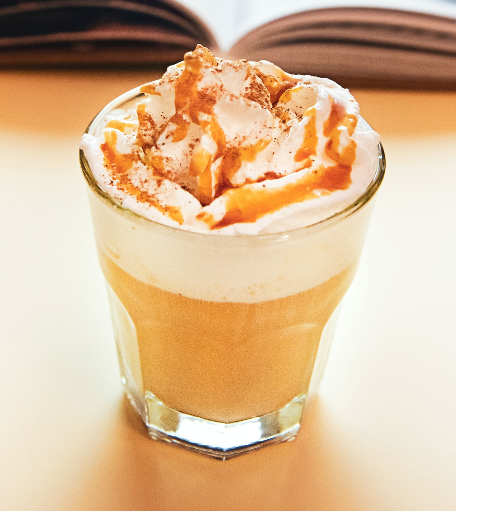

- 모카 라떼(Mocha Latte)
- 캬라멜 마끼아또(Caramel macchiato)
- 바닐라 라떼(Vanila latte)
Coffee - Latte
모카 라떼(Mocha Latte, Cafe mocha)

- 초코 소스 1펌프, 초코 가루 반스푼을 넣는다.
- 소스 위에 바로 에스프레소 30㎖를 붓는다.
- 소스와 가루가 녹게 잘 젓는다.
- 우유만 180㎖가량 넣는다.
- 초코 소스로 모양을 낸다.
캬라멜 마끼아또(Caramel macchiato)
- 캬라멜 소스 1펌프를 넣는다.
- 소스 위에 바로 에스프레소 30㎖를 붓는다.
- 캐러멜이 녹게 잘 젓는다.
- 우유만 180㎖가량 넣는다.
- 캬라멜 소스로 모양을 낸다.
바닐라 라떼(Vanila latte)

- 바닐라 시럽 2~3펌프를 넣는다.
- 소스 위에 바로 에스프레소 30㎖를 붓는다.
- 시럽이 섞이게 잘 젓는다.
- 우유만 180㎖가량 넣는다.
모든 메뉴는 드시는 분에 따라 우유량, 에스프레소량, 시럽과 소스 혹은 가루 양이 바뀔 수 있습니다